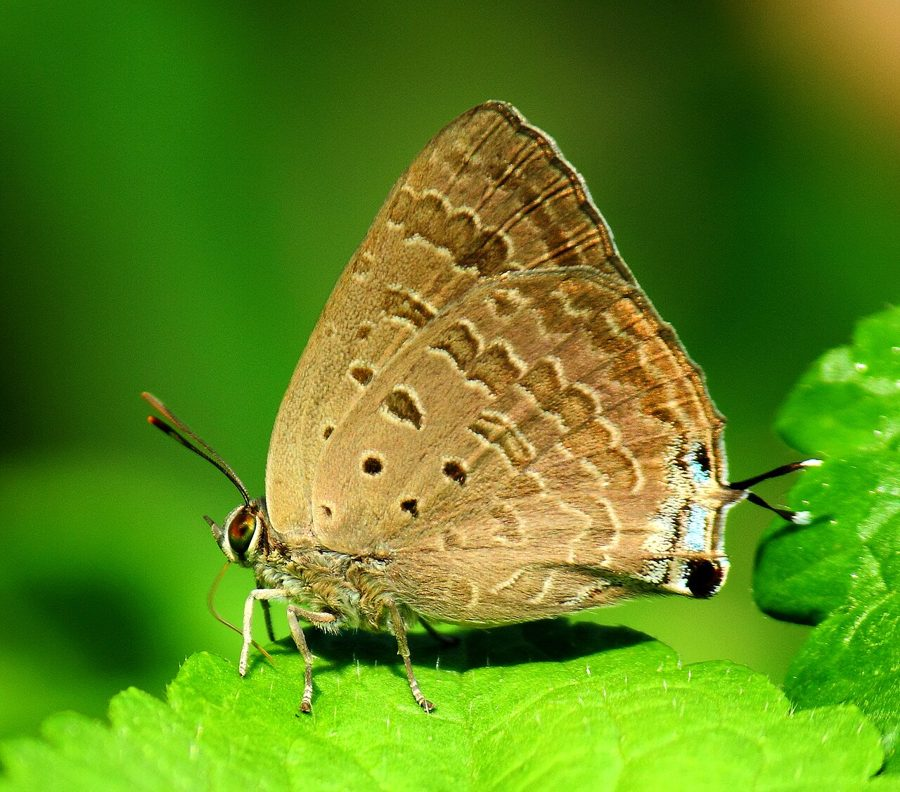

भारतीय ओकब्लूIndian Oakblue
Arhopala atrax · Lycaenidae · INS-0256

- Scientific name वैज्ञानिक नाम
- Arhopala atrax (Hewitson, 1862)
- Family कुल
- Lycaenidae
- Hindi हिंदी
- भारतीय ओकब्लू
- Local names स्थानीय नाम
- bharatiya oakblue, chhota oakblue titli, indian oakblue
- Status here यहाँ की स्थिति
- native
- Movement आवागमन
- Resident, here all year
- Known from कहाँ दर्ज
- Others have published records from the wider Awadh–Purvanchal plain, none yet from Basti–Ayodhya अवध–पूर्वांचल से दूसरों के प्रकाशित अभिलेख, बस्ती–अयोध्या से अभी नहीं
- IUCN IUCN
- not evaluated
- Review समीक्षा
- not yet reviewed
When to look कब देखें
Expected mainly in March, April, May, June, July, August, September, October, November. मुख्यतः मार्च, अप्रैल, मई, जून, जुलाई, अगस्त, सितंबर, अक्टूबर, नवंबर में अपेक्षित।
Tell it apart from इनसे अलग पहचानें
भारतीय ओकब्लू / Indian Oakblue
Arhopala atrax (Hewitson, 1862) — Lycaenidae
भारतीय ओकब्लू — उत्तर भारत के पर्णपाती जंगलों और पुराने बागों के निचले झाड़ीदार स्तर में पाई जाने वाली मध्यम आकार की ओकब्लू तितली। इसके नर के पंख ऊपर से चमकदार बैंगनी-नीले और नीचे से हल्के भूरे रंग के होते हैं, जिन पर सफेद घेरे वाले गोल धब्बे और पिछले पंख पर पन्ना-हरे तराशे होते हैं। यह तितली झाड़ियों पर बैठकर धूप सेकना पसंद करती है।
Quick Identification त्वरित पहचान
| Feature | Description |
|---|---|
| Wingspan | Medium-sized among Indian lycaenid butterflies |
| Upperside colour | Shining purplish-blue with narrow fuscous border in male, broader border in female |
| Underside colour | Light greyish-brown to earthy ochre with delicate ringed spots |
| Underside pattern | Brown spots encircled by delicate pale whitish rings |
| Tornal marking | Metallic emerald-green scales on hindwing tornus |
| Tail | Slender filamentous tail on lower hindwing margin |
| Perching habit | Commonly settles on low bushes and saplings in shade |
Field tip: Inspect lower shrub layers and saplings along canal banks or forest edges in October. A medium-sized butterfly flashing violet-blue in flight and showing pale greyish-brown with neat ringed spots and a fine tail when settled is Arhopala atrax.
हिंदी — कैसे पहचानें: झाड़ियों और छोटे पेड़ों पर बैठने वाली नीले रंग की तितली। पंख खोलने पर ऊपरी हिस्सा बैंगनी-नीला और बंद होने पर निचला हिस्सा हल्का भूरा दिखता है जिस पर बारीक छल्लेदार धब्बे होते हैं।
Morphology आकारिकी
The upper wing surface of the male exhibits a deep, shining purplish blue that does not quite reach the intense brilliance of A. amantes. The dark outer margins of both wings are narrow and crisply demarcated. In females, the purplish-blue patch is substantially smaller, restricted to the discal area of the forewing and middle of the hindwing, with the remaining wings covered in dull smoky brown.
On the underside, the ground colour is a noticeably paler and warmer grey-brown than in other regional oakblues. The transverse series of spots are moderately dark brown, regular, and outlined cleanly in pale whitish grey. The metallic scales at the tornus form a compact emerald patch across the lower interspaces.
The ventral patterning serves effectively to break up the silhouette of the butterfly when it perches against twig forks and tree trunks. The delicate tails and tornal eyespot mimic a false head, directing potential predator strikes away from the vulnerable insect body.
हिंदी: नर तितली के पंख ऊपर से चमकदार बैंगनी-नीले होते हैं जबकि मादा में नीलापन बीच तक ही सीमित रहता है। पंखों का निचला हिस्सा मटमैला भूरा होता है जिस पर सफेद घेरों वाले गोल धब्बे और पिछले पंख पर पतली पूंछ होती है।
Behaviour & Ecology व्यवहार और पारिस्थितिकी
Arhopala atrax inhabits shaded understorey vegetation, forest glades, and old orchard borders. Unlike some higher-canopy oakblues, this species frequently perches in low shrubs and saplings at heights between one and three metres.
Males establish territorial perches on sunlit leaves, darting outward to challenge intruding butterflies before returning to the same leaf. Adults are active during sunny intervals but avoid midday heat by retreating into dense thickets.
In the early morning, they can be found basking with wings opened halfway to catch the warmth of filtered sunlight. When disturbed, they fly swiftly into dense brambles, settling instantly with folded wings to reveal their cryptic underside coloration.
The species displays a distinct bimodal daily activity pattern, with peak flights occurring during mid-morning and late afternoon. During overcast or rainy conditions, individuals remain motionless on the undersides of woody branches.
हिंदी: यह तितली ऊंचे पेड़ों के बजाय जमीन से कुछ फुट ऊपर झाड़ियों पर बैठना पसंद करती है। नर तितलियां धूप वाली पत्तियों पर बैठकर अपने इलाके की रखवाली करती हैं। खतरा महसूस होते ही यह तेजी से झाड़ियों में छिप जाती है।
Life Cycle / Phenology जीवन चक्र
The life cycle exhibits classic lycaenid myrmecophily. Eggs are laid on tender foliage, leaf buds, or twigs of suitable woody hosts. The caterpillar is onisciform (woodlouse-shaped), velvety green or purplish brown with obscure pale dorsal markings.
The larva is equipped with specialised glands that secrete sugar-rich fluids to attract ants. Arboreal ants attend the larvae continuously, deterring parasitic insects and predators in exchange for sweet secretions.
Pupation occurs either in a curled leaf tied with silk or at the base of the tree trunk in leaf litter under ant supervision. Multiple overlapping broods occur from spring through the end of autumn.
The complete development from egg to adult takes approximately four to six weeks during warm monsoon weather, extending during cooler winter conditions when development slows.
हिंदी: इसकी मादा पत्तों की नई कोंपलों पर अंडे देती है। इल्लियां चपटी और हरी होती हैं और मीठा रस बनाकर चींटियों को अपनी ओर खींचती हैं। चींटियों की सुरक्षा में पलकर यह प्यूपा बनती है और साल में कई पीढ़ियां पैदा होती हैं।
Host Plants or Prey आहार
No larval host plant is given for Arhopala atrax in the sources opened for this profile: Funet's entry for the species lists none. Its relative the Large Oakblue feeds on Terminalia and Lagerstroemia, Jarul among them, so the trees of Awadh's groves are where to look.
Adult butterflies feed on flower nectar of small shrubs, decaying fallen fruit, and sap exuding from wounded branches. They occasionally visit wet soil along canal banks for mineral salts.
हिंदी: इसकी इल्लियां किन पेड़ों पर पलती हैं, यह खोले गए स्रोतों में दर्ज नहीं है। वयस्क तितलियां छोटे फूलों के रस, पके फलों और पेड़ के तने से निकलने वाले रस पर निर्भर रहती हैं।
Predators / Natural Enemies शत्रु
Immature stages are subject to predation by predatory shield bugs, spiders, and parasitation by chalcid and braconid wasps if separated from attending ants.
Adults are hunted by insectivorous birds, praying mantises, and garden lizards (Calotes species) when perching in low vegetation. Web-spinning orb weavers also snare flying individuals in forest gaps.
Crab spiders waiting cryptically on foliage represent significant predators of basking adults, seizing them when they settle to sun themselves.
हिंदी: चींटियों की गैरमौजूदगी में परजीवी ततैये इल्लियों को खा जाते हैं। वयस्क तितलियों को झाड़ियों में रहने वाली शिकारी चिड़ियां, गिरगिट, मेंटिस और मकड़ियां अपना शिकार बनाती हैं।
Agricultural / Human Relevance कृषि प्रासंगिकता
The species is completely benign to agriculture and forestry. It feeds harmlessly on wild and cultivated trees without causing significant defoliation.
It serves as an ecological indicator of well-stratified woodland with healthy understorey shrubs and ant biodiversity.
Maintaining diverse understorey vegetation in rural groves and field boundaries helps preserve breeding populations of this discreet butterfly.
हिंदी: यह तितली खेती को कोई नुकसान नहीं पहुंचाती। यह स्वस्थ झाड़ीदार जंगलों और बागों की जैव विविधता का प्रतीक है। झाड़ियों और मेड़ों को सुरक्षित रखने से इसकी आबादी बची रहती है।
Expected Locally स्थानीय रूप से अपेक्षित
Not a field record. Written from published accounts for eastern Uttar Pradesh. No confirmed local sighting yet — if you have seen it, that is what the atlas needs.
अभी तक स्थानीय पुष्टि नहीं। यह विवरण प्रकाशित स्रोतों से है, किसी अवलोकन से नहीं।
GBIF holds published records from the wider Awadh–Purvanchal plain, none yet from Basti–Ayodhya. In eastern Uttar Pradesh, Arhopala atrax is expected in woodland patches, canal plantations, and village groves supporting broadleaved trees and shady understorey shrubs. A confirmed first record requires a clear photograph with place and date submitted through the project portal.
हिंदी: अवध के जंगलों और नहर किनारे उगी झाड़ियों में इस तितली के मिलने की संभावना है। स्थानीय स्तर पर पुष्टि के लिए इसके पंखों की स्पष्ट तस्वीर तारीख सहित भेजें।
Distribution वितरण
Global range: Northern and eastern Indian subcontinent, extending eastwards into Myanmar.
In India: Recorded from the lower Himalayas through the northern plains to Assam (Varshney & Smetacek 2015).
In Uttar Pradesh: Documented from deciduous forest edges and woodland patches across the plain.
In Basti district / eastern UP: Expected in shaded woodland thickets, canal plantations, and riverine scrub.
हिंदी: यह तितली उत्तर भारत के मैदानी भागों, हिमालय की तलहटी और म्यांमार तक पाई जाती है। उत्तर प्रदेश के झाड़ीदार जंगलों और पेड़ों के झुरमुटों में यह आम तौर पर मिलती है।
Research Questions शोध प्रश्न
- Which specific ant species attend Arhopala atrax larvae in the agricultural landscapes of Awadh?
- How does seasonal leaf flush of native trees influence the timing of generations in the Gangetic plain?
- What is the degree of canopy versus understorey habitat preference in this species?
- How does winter temperature variation affect the survival of diapausing pupae in rural gardens?
- क्या यह तितली अवध के ग्रामीण क्षेत्रों में जामुन के वृक्षों पर नियमित रूप से पाई जाती है?
- क्या अत्यधिक कीटनाशक प्रयोग से चींटियों के नष्ट होने पर इसकी आबादी प्रभावित होती है?
Similar Species मिलती-जुलती प्रजातियाँ
| Species | How to tell apart | हिंदी |
|---|---|---|
| Arhopala amantes | Substantially larger, with more extensive rich metallic blue on upperside and much darker underside | आकार में काफी बड़ा, गहरे नीले पंख और अत्यंत गहरा भूरा निचला भाग |
| Iraota timoleon | Possesses a prominent, jagged silver-white streak on the hindwing underside | निचले पंख पर विशिष्ट चांदी जैसी टेढ़ी-मेढ़ी चमकदार पट्टी |
| Rapala varuna | Wings upperside dark indigo-black, underside plain greyish with a single narrow white-edged band | ऊपरी सतह गहरी जामुनी-काली, निचली सतह पर एक सफेद रेखा |
Field rule: Identify by medium size, low-shrub perching habit, light brown underside with neat ringed spots, and absence of bold silver streaks.
हिंदी: मध्यम आकार, झाड़ियों पर बैठने की आदत और पंखों के नीचे हल्के भूरे छल्लेदार धब्बे इस तितली को बड़े ओकब्लू से अलग करते हैं।
Taxonomy & Classification वर्गीकरण
Original description. Arhopala atrax was described as Amblypodia atrax by William Chapman Hewitson in 1862 (Specimen of a Catalogue of Lycaenidae in the British Museum, p. 13). It was subsequently classified under Arhopala Boisduval.
Subspecies. Monotypic — no distinct subspecies are recognized across mainland northern India.
Family and order placement. Classified within the family Lycaenidae, subfamily Theclinae, and tribe Arhopalini, sharing ant associations and cryptic leaf-like underside patterns.
IUCN status rationale. Not evaluated globally by the IUCN Red List. It is a widely distributed lycaenid without identifiable conservation threats.
हिंदी: इस तितली का वैज्ञानिक विवरण 1862 में विलियम हेविटसन ने दिया था। यह लाइकेनिडे कुल की सदस्य है और प्रकृति में सुरक्षित है।
Photo Gallery फोटो गैलरी
No photos yet — add field photos to media/species/indian_oakblue/ and run node scripts/sync_photos.js.
Photos needed आवश्यक फोटो
- [ ] Basking adult showing shining purplish-blue upperside (बैंगनी-नीले पंख फैलाए तितली)
- [ ] Underside pattern showing pale brown ground and ringed spots (पंखों के नीचे के गोल छल्लेदार धब्बे)
- [ ] Adult perching on low understorey foliage (निचली झाड़ियों पर बैठी तितली)
References संदर्भ
- Hewitson, W. C. (1862). Specimen of a Catalogue of Lycaenidae in the British Museum. British Museum, London.
- Wynter-Blyth, M. A. (1957). Butterflies of the Indian Region. Bombay Natural History Society, Bombay.
- Kehimkar, I. (2008). The Book of Indian Butterflies. Bombay Natural History Society, Oxford University Press, Mumbai.
- Varshney, R. K. & Smetacek, P. (2015). A Synoptic Catalogue of the Butterflies of India. Butterfly Research Centre, Bhimtal.
- GBIF Occurrence Data — Arhopala atrax, India (2025).
Source file: species/fauna/insects/indian_oakblue.md